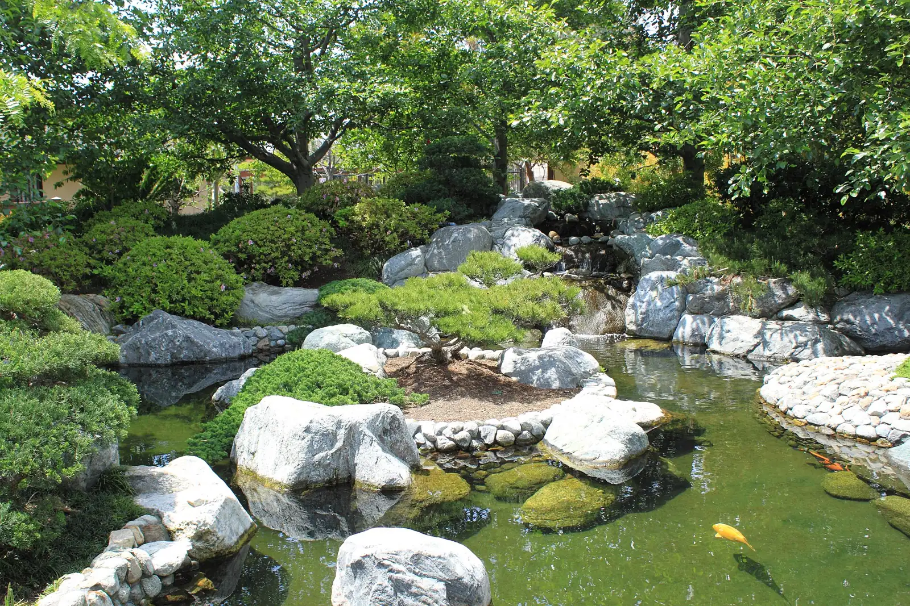
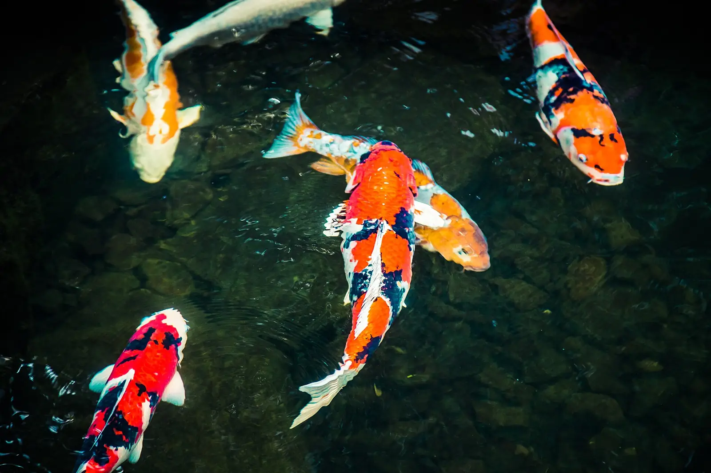
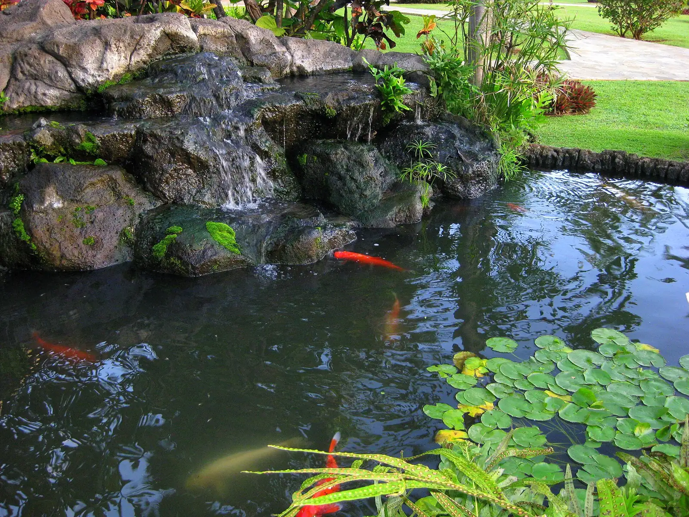
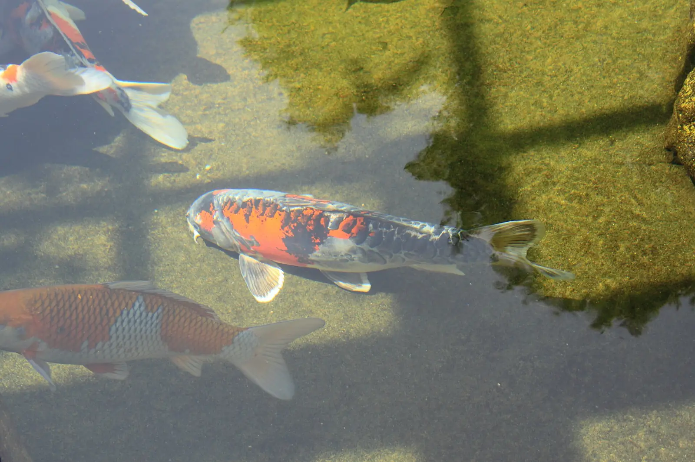
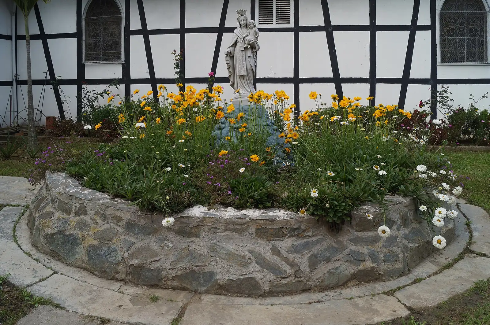
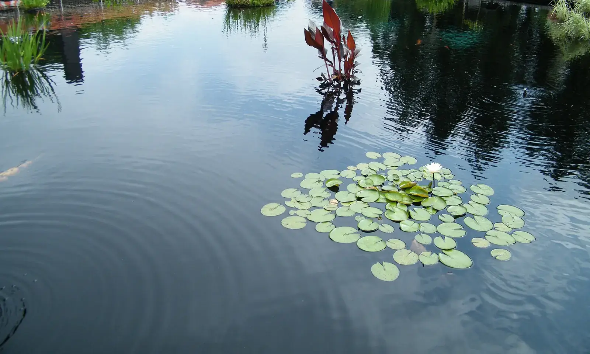
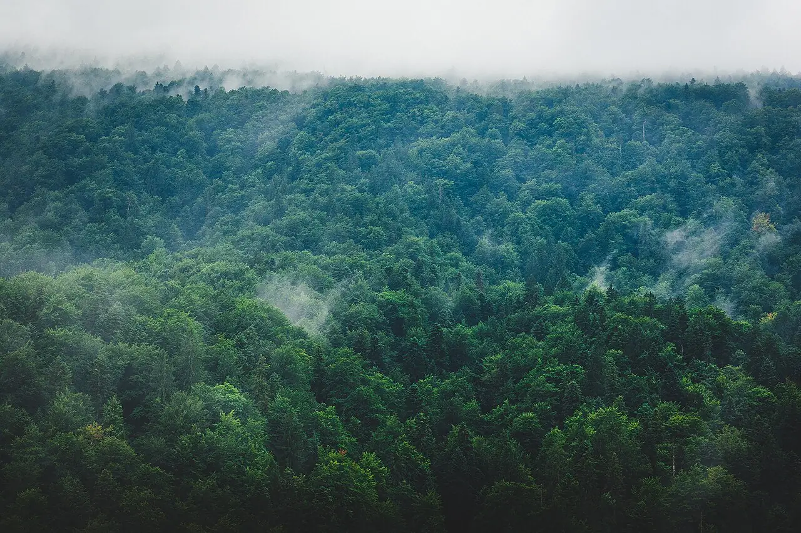

El jardín
Muy cuidado, con su estanque de peces, para descansar sin salir de las cabañas.

El estanque de peces
Toque el agua, a ver qué hacen.
Aquí no hay nada que hacer
Y de eso se trata. El aire es frío y limpio, el jardín está cuidado y el agua se mueve despacio.
- TempranoCon la neblina todavía encima del jardín.
- Al mediodíaA mirar a los peces.
- Con niñosLos peces se miran desde la orilla, con un adulto al lado.




